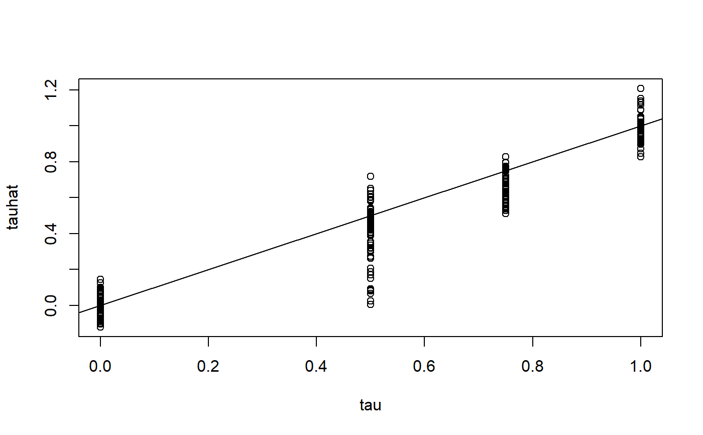

bcf.RdFit Bayesian Causal Forests
bcf( y, z, x_control, x_moderate = x_control, pihat, w = NULL, random_seed = sample.int(.Machine$integer.max, 1), n_chains = 4, n_cores = n_chains, n_threads = max((RcppParallel::defaultNumThreads() - 2)/n_cores, 1), nburn = 200, nsim = 200, nthin = 1, update_interval = 100, ntree_control = 200, sd_control = 2 * sd(y), base_control = 0.95, power_control = 2, ntree_moderate = 50, sd_moderate = sd(y), base_moderate = 0.25, power_moderate = 3, save_tree_directory = "..", nu = 3, lambda = NULL, sigq = 0.9, sighat = NULL, include_pi = "control", use_muscale = TRUE, use_tauscale = TRUE, verbose = FALSE )
| y | Response variable |
|---|---|
| z | Treatment variable |
| x_control | Design matrix for the "prognostic" function mu(x) |
| x_moderate | Design matrix for the covariate-dependent treatment effects tau(x) |
| pihat | Length n estimates of propensity score |
| w | An optional vector of weights. When present, BCF fits a model \(y | x ~ N(f(x), \sigma^2 / w)\), where \(f(x)\) is the unknown function. |
| random_seed | A random seed passed to R's set.seed |
| n_chains | An optional integer of the number of MCMC chains to run |
| n_cores | An optional integer of the number of cores to run your MCMC chains on |
| n_threads | An optional integer of the number of threads to parallelize within chain bcf operations on |
| nburn | Number of burn-in MCMC iterations |
| nsim | Number of MCMC iterations to save after burn-in. |
| nthin | Save every nthin'th MCMC iterate. The total number of MCMC iterations will be nsim*nthin + nburn. |
| update_interval | Print status every update_interval MCMC iterations |
| ntree_control | Number of trees in mu(x) |
| sd_control | SD(mu(x)) marginally at any covariate value (or its prior median if use_muscale=TRUE) |
| base_control | Base for tree prior on mu(x) trees (see details) |
| power_control | Power for the tree prior on mu(x) trees |
| ntree_moderate | Number of trees in tau(x) |
| sd_moderate | SD(tau(x)) marginally at any covariate value (or its prior median if use_tauscale=TRUE) |
| base_moderate | Base for tree prior on tau(x) trees (see details) |
| power_moderate | Power for the tree prior on tau(x) trees (see details) |
| save_tree_directory | Specify where trees should be saved. Keep track of this for predict(). Defaults to working directory. |
| nu | Degrees of freedom in the chisq prior on \(sigma^2\) |
| lambda | Scale parameter in the chisq prior on \(sigma^2\) |
| sigq | Calibration quantile for the chisq prior on \(sigma^2\) |
| sighat | Calibration estimate for the chisq prior on \(sigma^2\) |
| include_pi | Takes values "control", "moderate", "both" or "none". Whether to include pihat in mu(x) ("control"), tau(x) ("moderate"), both or none. Values of "control" or "both" are HIGHLY recommended with observational data. |
| use_muscale | Use a half-Cauchy hyperprior on the scale of mu. |
| use_tauscale | Use a half-Normal prior on the scale of tau. |
| verbose | logical, whether to print log of MCMC iterations, defaults to FALSE. |
A fitted bcf object that is a list with elements
nsim by n matrix of posterior samples of individual treatment effects
nsim by n matrix of posterior samples of individual treatment effects
Length nsim vector of posterior samples of sigma
Fits the Bayesian Causal Forest model (Hahn et. al. 2018): For a response variable y, binary treatment z, and covariates x, $$y_i = \mu(x_i, \pi_i) + \tau(x_i, \pi_i)z_i + \epsilon_i$$ where \(\pi_i\) is an (optional) estimate of the propensity score \(\Pr(Z_i=1 | X_i=x_i)\) and \(\epsilon_i \sim N(0,\sigma^2)\)
Some notes:
x_control and x_moderate must be numeric matrices. See e.g. the makeModelMatrix function in the dbarts package for appropriately constructing a design matrix from a data.frame
sd_control and sd_moderate are the prior SD(mu(x)) and SD(tau(x)) at a given value of x (respectively). If use_muscale = FALSE, then this is the parameter \(\sigma_\mu\) from the original BART paper, where the leaf parameters have prior distribution \(N(0, \sigma_\mu/m)\), where m is the number of trees. If use_muscale=TRUE then sd_control is the prior median of a half Cauchy prior for SD(mu(x)). If use_tauscale = TRUE, then sd_moderate is the prior median of a half Normal prior for SD(tau(x)).
By default the prior on \(\sigma^2\) is calibrated as in Chipman, George and McCulloch (2008).
Hahn, Murray, and Carvalho(2017). Bayesian regression tree models for causal inference: regularization, confounding, and heterogeneous effects. https://arxiv.org/abs/1706.09523. (Call citation("bcf") from the command line for citation information in Bibtex format.)
# \donttest{ # data generating process p = 3 #two control variables and one moderator n = 250 set.seed(1) x = matrix(rnorm(n*p), nrow=n) # create targeted selection q = -1*(x[,1]>(x[,2])) + 1*(x[,1]<(x[,2])) # generate treatment variable pi = pnorm(q) z = rbinom(n,1,pi) # tau is the true (homogeneous) treatment effect tau = (0.5*(x[,3] > -3/4) + 0.25*(x[,3] > 0) + 0.25*(x[,3]>3/4)) # generate the response using q, tau and z mu = (q + tau*z) # set the noise level relative to the expected mean function of Y sigma = diff(range(q + tau*pi))/8 # draw the response variable with additive error y = mu + sigma*rnorm(n) # If you didn't know pi, you would estimate it here pihat = pnorm(q) bcf_fit = bcf(y, z, x, x, pihat, nburn=2000, nsim=2000) # Get posterior of treatment effects tau_post = bcf_fit$tau tauhat = colMeans(tau_post) plot(tau, tauhat); abline(0,1)# } # \donttest{ # data generating process p = 3 #two control variables and one moderator n = 250 # set.seed(1) x = matrix(rnorm(n*p), nrow=n) # create targeted selection q = -1*(x[,1]>(x[,2])) + 1*(x[,1]<(x[,2])) # generate treatment variable pi = pnorm(q) z = rbinom(n,1,pi) # tau is the true (homogeneous) treatment effect tau = (0.5*(x[,3] > -3/4) + 0.25*(x[,3] > 0) + 0.25*(x[,3]>3/4)) # generate the response using q, tau and z mu = (q + tau*z) # set the noise level relative to the expected mean function of Y sigma = diff(range(q + tau*pi))/8 # draw the response variable with additive error y = mu + sigma*rnorm(n) pihat = pnorm(q) bcf_fit = bcf(y, z, x, x, pihat, nburn=100, nsim=10) # Get posterior of treatment effects tau_post = bcf_fit$tau tauhat = colMeans(tau_post) plot(tau, tauhat); abline(0,1)# }